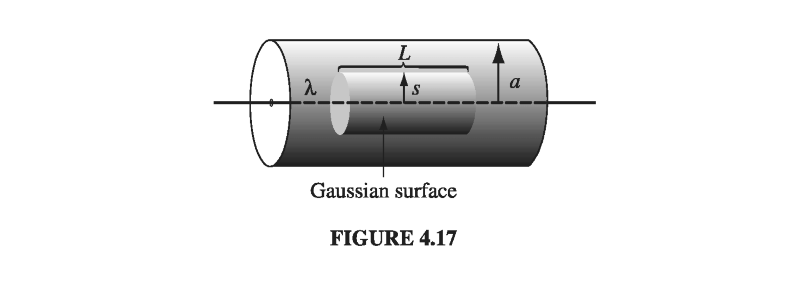

title: The Electric Displacement weight: 430#
4.3: The Electric Displacement#
4.3.1: Gauss’s Law in the Presence of Dielectrics#
In Section 4.2 we found that the effect of polarization is to produce accumulations of (bound) charge, \( \rho_b = - \nabla \cdot \vec{P} \) within the dielectric and \( \sigma_b = \vec{P} \cdot \hat{n} \) on the surface. The field due to polarization of the medium is just the field of this bound charge. We are now ready to put it all together: the field attributable to bound charge plus the field due to everything else (which, for want of a better term, we call free charge, \( \rho_f \)). The free charge might consist of electrons on a conductor or ions embedded in the dielectric material or whatever; any charge, in other words, that is not a result of polarization. Within the dielectric, the total charge density can be written
and Gauss’s law reads
where E is now the total field, not just that portion generated by polarization.
It is convenient to combine the two divergence terms:
The expression in parentheses is known as the electric displacement and is designated by the letter D:
In terms of D, Gauss’s law then reads
or in integral form
where \( Q_{f_{enc}} \) denotes the total free charge enclosed in the volume. This is a particularly useful way to express Gauss’s law, in the context of dielectrics, because it makes reference only to the free charges, and free charge is the stuff we control. Bound charge comes along for the ride: when we put the free charge in place, a certain polarization automatically arises, by the mechanisms of Sect 4.1, and this polarization produces the bound charge. In a typical problem, therefore, we know \( \rho_f \), but we do not (initially) know \( \rho_b \); (249) lets us go right to work with the information at hand. In particular, whenever the requisite symmetry is present, we can immediately calculate \(\vec{D}\) by the standard Gauss’s law methods.
Example 4.4#
A long straight wire, carrying uniform line charge \( \lambda \), is surrounded by rubber insulation out to a radius a (Fig 4.17). Find the electric displacement.

Drawing a cylindrical Gaussian surface, of radius s and length L, and applying (249) we find
Therefore
Notice that this formula holds both within the insulation and outside it. In the latter region, \( \vec{P} = 0 \) so
Inside the rubber, the electric field cannot be determined, since we do not know P.
Hold on a tick! We got all the way to a field we can calculate by Gauss’s law, but we have left out the surface bound charge \( \sigma_b \). What happened to it? To be more precise, (248) works within a dielectric, but we cannot apply Gauss’s law precisely at the boundary of the dielectric, because the local \( \rho_b \) blows up there, taking \( \nabla \cdot \vec{E} \) with it. The polarization drops abruptly to zero outside the material, so its derivative is a delta function. The surface bound charge is precisely this term, so in this sense it is actually included in \( \rho_b \), but we ordinarily prefer to handle it separately as \( \sigma_b \). We could even picture the edge of the dielectric as having some finite thickness, within which the polarization drops off to zero (which is probably a more realistic model anyway), in which case there is no \( \sigma_b \), \( \rho_b \) varies rapidly but smoothly, and Gauss’s law can safely be applied everywhere. In any case, we can use (249) safely without fear of this “defect.”
4.3.2: A Deceptive Parallel#
Our expression for the divergence of the displacement looks just like Gauss’s law, only the total charge density \( \rho \) is replaced by the free charge density \( \rho_f \), and \( \vec{D} \) is substituted for \( \epsilon_0 \vec{E} \). For this reason, you may be tempted to conclude that D is “just like” E (apart from the factor \( \epsilon_0 \)), except that its source is \( \rho_f \) instead of \( \rho \). That is, it’s tempting to say “To solve problems involving dielectrics, you just forget all about the bound charge - calculate the field as you ordinarily would, only call the answer D instead of E.” This reasoning is seductive, but the conclusion is false; in particular there is no “Coulomb’s law” for D:
This is because the divergence alone is insufficient to determine a vector field; you need to know its curl as well. One tends to forget this in the case of electrostatics because we usually don’t care about the curl of E anyway. But the curl of D is not always zero, even in electrostatics, since there is no reason, in general, to suppose that the curl of P vanishes:
Sometimes it does, but more often it does not. The bar electret of Prob 4.11 is one example of this: here there is no free charge anywhere, so if you really believe that the only source of D is \( \rho_f \) you will be forced to conclude that \( \vec{D} = 0 \) everywhere, and hence that \( \vec{E} = (-1 / \epsilon_0) \vec{P} \) inside and \( \vec{E} = 0 \) outside the electret, which is obviously wrong. And because \( \nabla \times \vec{D} \neq 0 \) in general, D cannot be expressed as the gradient of a scalar - there is no “potential” for D.
Advice: When you are asked to compute the electric displacement, first look for symmetry. If the problem exhibits spherical, cylindrical, or plane symmetry, then you can get D directly from Eq. 4.23 by the usual Gauss’s law methods. (Evidently in such cases \( \nabla \times \vec{P} \) is automatically zero, but since symmetry alone dictates the answer, you’re not really obliged to worry about the curl.) If the requisite symmetry is absent, you’ll have to think of another approach, and, in particular, you must not assume that D is determined exclusively by the free charge.
4.3.3: Boundary Conditions#
The electrostatic boundary conditions we had in Sect 2.3 can be re-cast in terms of D. (249) tells us the discontinuity in the component perpendicular to an interface:
while (251) gives the discontinuity in parallel components:
In the presence of dielectrics, these are sometimes more useful than the corresponding boundary conditions on E (Eqs 2.31 and 2.32):
and